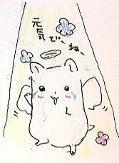

このページは故下山孝さんの「北摂の生き物」をご遺族の了解のもと
池田・人と自然の会
が転載しています。一部データが欠けている部分があります。

1998年1月14日午前0時20分、ハムチャンお母さんがなくなりました。
夜、「出てこない。」と妹が言うので出してみるとピクピクとしか動きませんでした。
「凍(こお)っている」にしては変だと思いながらずっと暖(あたた)め続けましたが、0時過ぎにくしゃみを何度かし、20分ごろキュー・キューと5回ほど鳴いた後、力がぬけてしまいました。
その後、10分程で体が固(かた)くなってしまいました。
ひょっとすると風邪(かぜ)をひいていたのかもしれません。
これまで、応援(おうえん)してくださってありがとうございました。
ハムチャンのページにもどる
はじめにもどる